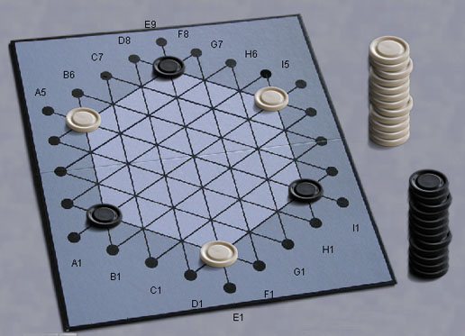

Gipf
Gipf est le premier jeu de la série du même nom, ainsi que la
« plate-forme » liant tous les jeux entre eux à travers
l'utilisation de pièces supplémentaires.
Au premier abord, Gipf semble être une simple variation du Puissance 4
où les alignements sont formés par glissement des pièces vers le
centre. Ce n'est vraiment qu'au
premier abord, car il s'agit en fait d'un jeu de réflexion très
profond.
Lisez les règles
officielles sur le site Internet du projet Gipf.
Robots : Les joueurs
expérimentés ne se sont pas encore prononcés, mais le robot est
suffisamment adroit pour tenir les débutants en haleine.
|

|